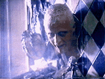

| Année | 1982 |
| Pays | USA |
| Réalisation | Ridley SCOTT |
| Acteurs(trices) | Harrison FORD (Deckard), Rutger HAUER (Batty), Sean YOUNG (Rachel) |
| Scénario | Hampton FANCHER d'après Les androïdes rêvent-ils de moutons électriques ? de Philip K. DICK |
| Photo | Jordan CRONENWETH |
| Musique | Vangelis |
| Production | Michael DEELEY |
| Distribution | Warner Bros |
| Durée | 116 minutes |